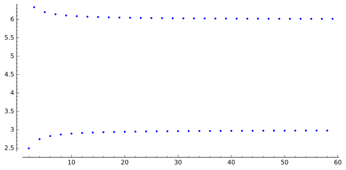

Limits of sequences and functions are the most fundamental concepts in calculus.
Intuitively, a sequence is an ordered list of terms: $x_1, x_2, x_3, \dots$ Formally, a sequence is a function $f: A \to B$ where $A \subseteq \mathbb{N}$ and $B$ is the set of all terms. We denote this function by $(x_n)_{n \in A}$ or simply $(x_n)$. For example, $(\dfrac{1+n}{n})_{n \in \mathbb{N}} = (\dfrac{2}{1}, \dfrac{3}{2},\dfrac{4}{3},\dots)$
If there exists a number $U \in \mathbb{R}$ such that $x_n \leq U$ for all $n \in \mathbb{N}$ then $U$ is the upper bound of the sequence $(x_n)$. Similarly, if there exists a number $L$ such that $x_n \geq L$ for all $n \in \mathbb{N}$ then $L$ is the lower bound of the sequence $x_n$. If a sequence is bounded below and above then it is bounded. In other words, a sequence $(x_n)$ is bounded if there exists a number $M>0$ such that $|x_n|\leq M$ for all $n \in \mathbb{N}$.
Similar definiton applies to general sets: We call $M$ an upper bound of a set $A \subset \mathbb{R}$ if $M \leq x$ for all $x \in A$. If $M$ is a upper bound then $-M$ is a lower bound.
(Theorem) Any non-empty subset $A$ in $\mathbb{R}$ with an upper bound has a unique least upper bound and is denoted by $\sup_{x \in A} x$ or $\inf\{x \;| \; x \in A\}$.
The greatest lower bound is defined similarly and is denoted as $\inf_{x \in A} x$ or $\inf\{x \;| \; x \in A\}$.
Let $(a_n)_{0}^{\infty}$ be a sequence in extended real number system ($\mathbb{R} + \{\infty, -\infty\}$). Let $b_n = \sup \{a_k | k \geq n\}$ be the supremum of the tails of the sequence $(a_n)$.It is obvious that the sequence $(b_n)$ is monotone decreasing. It is also bounded (in extended real number system all sequences are bounded). Hence it converges to a limit which we denote it by $\lim_{n \to \infty}\sup{a_n}$.
In simple terms, $\lim_{n \to \infty}\sup{a_n}$ and $\lim_{n \to \infty}\inf{a_n}$ are the largest and smallest subsequential limits of a sequence $(a_n)$.
As it happen, $\lim_{n \to \infty}\sup{a_n} = \inf_{n \to \infty}\sup \{a_k | k \geq n\}$. To see this, it is helpful to visualize using the following example:
$$ 3 - \frac12, 6 + \frac13, 3 - \frac14, 6 + \frac15, 3- \frac16, 6+ \frac17, \dots $$The $\inf$ of the subsequence after second term is $3 - \frac14$ and after third term is $3- \frac16$. As you can see, the sequence of $b_n = \inf \{a_k | k \geq n\}$ is increasing. Similar analysis shows that $\sup$ is decreasing. 
A sequence $(x_n)$ is called an increasing sequence if $x_{n+1} \geq x_{n}$ for all $n \in \mathbb{N}$. Likewise, A sequence $(x_n)$ is called a decreasing sequence if $x_{n+1} \leq x_{n}$ for all $n \in \mathbb{N}$. A sequence is monotone if it is either increasing or decreasing.
Informally, a limit of a sequence $(x_n)$ is a number $x$ such that the terms $x_n$ remain arbitrary close to $x$ when $n$ is sufficiently large. Formally we can define convergence of a sequence as follows:
Convergence of a Sequence: The sequence $(x_n)$ converges to the limit $x$ if for any arbitrary small number $\delta > 0$, there exists a number $N$ such that $|x_n - x| < \delta$ for each $n \geq N$. We say $x_n$ converges to $x$ and is denoted by $x_n \to x$ or $\lim x_n = x$ or $\lim_{n\to\infty} {x_n} = x$ (This last notation emphasizes that limits of sequences is a special case of limits of functions introduced in next section.
1. Every convergent sequence is bounded.
2. Monotone Convergence Theorem: If a sequence is monotonic and bounded, then it is convergent.
3. If $k$ is a constant, and $(x_n)$ converges to $x$, then $\lim kx_n = kx$.
4. If $(x_n)$ converges to $x$ and $(y_n)$ converges to $y$, then:
$$ \lim (x_n \pm y_n) = x \pm y $$ $$ \lim(x_ny_n) = xy $$ $$ \lim(\dfrac{x_n}{y_n}) = \dfrac{x}{y}$$ $$ \lim (x_n ^{p}) = (\lim x_n)^{p} $$5. If $k > 0 $, then $\dfrac{1}{n^k} \to 0$.
6. if $|k| > 1$, then $\dfrac{1}{k^n} \to 0$.
7. Sandwitch (or Squeeze) Theorem: Assume $(x_n)$ and $(y_n)$ are sequences that converge to the same limit $L$. If $(s_n)$ is a sequence such that $x_n < s_n < y_n$ for every $n > N$, then $(s_n)$ also converges to $L$. The terms of sequence $(s_n)$ are sandwitched between those of $(x_n)$ and $(y_n)$.
8. (Order Limit Theorem) Assume $\lim x_n = x$ and $\lim y_n = y$, then:
(i) If $x_n \geq 0 $ for all $n \in \mathbb{N}$, then $x \geq 0$.
(ii) If $x_n \leq y_n $ for all $n \in \mathbb{N}$, then $x \geq y$.
(iii) If there exists $c \in \mathbb{R}$ such that $c \leq x_n$ for all $n \in \mathbb{N}$, then $c \leq x$. Similarly, if $x_n \leq c$ for all $n \in \mathbb{N}$, then $x \leq c$.
9. Assume that the sequence $(x_n)$ converges to the limit $x$. If $(x_{n_k})$ is a subsequence of the $(x_n)$ then $(x_{n_k})$ also converges to $x$.
10. (Bolzano-Weierstrass Theorem). Every bounded sequence contains a convergent subsequence.
A sequence $(x_n)$ is called a Cauchy sequence if for every $\epsilon > 0$ there exits an $N \in \mathbb{N}$ such that whatever $m,n \geq N$ it follows that $|x_n - x_m| < \epsilon$. In other words, a sequence is a Cauchy sequence if, for every $\epsilon$, there is a point in the sequence after which the terms in the sequence are closer to each other after the given $\epsilon$.
10. (Cauchy Criterion). A sequence converges to a limit if and only if it is a Cauchy sequence.
There are three ways to define limits of a function:
a) General definition (involves sequences): If for all sequences $(x_n)$ that converges to $c$ and whose terms are in the domain of function $f$, the sequence $f(x_n)$ converges to $L$, then we define $L$ as the limit of function $f$. In mathematical notation, if $\lim_{n\to\infty}x_n = c$ implies that $\lim_{n\to\infty}f(x_n) =L$ then $L$ is the limit of function $f$ as $x$ approaches $c$.
b) $\epsilon-\delta$ defintion: Given any real number $\epsilon>0$ (no matter how small), there exists another real number $\delta > 0$ such that:
$$ 0 < |x-c| < \delta \implies |f(x) - L| < \epsilon $$In general, the value of $\delta$ depends on $\epsilon$. Hence, some authors use the notation $\delta(\epsilon)$ instead of $\delta$.
c) One-sided limits: We can define one-sided limits both in terms of (a) sequence definition and (b)$\epsilon-\delta$ definition. If every term of sequence $(x_n)$ is less than $c$ we say that x approaches c "from below" or "from left" and write $x \to c-$. If for every such sequence $(x_n)$, the sequence $(f(x_n))$ converges to limit $l$, then we call $l$ the left-sided limit of $f$ as $x$ approaches $c$ and we denote it as $\lim_{x\to a^{-}} f(x) = l$. Similarly, If every term of sequence $(x_n)$ is bigger than $c$ we say that x approaches c "from above" or "from right" and write $x \to c+$. If for every such sequence $(x_n)$, the sequence $(f(x_n))$ converges to limit $r$, then we call $r$ the right-sided limit of $f$ as $x$ approaches $c$ and we denote it as $\lim_{x\to a^{+}} f(x) = r$.
Using $\epsilon-\delta$ definition, we define the left-sided limit as follows: Let $I$ be an interval in the domain of $f$. Given any real number $\epsilon>0$ (no matter how small), there exists another real number $\delta > 0$ such that $\forall x \in I,$
$$ 0 < c -x < \delta \implies |f(x) - l| < \epsilon $$ The right-sided limit is defined similarly except: $$ 0 < x -c < \delta \implies |f(x) - l| < \epsilon $$Theorem 1: A function $f(x)$ has the limit $L$ at $c$ if and only if it has left-side and right-sided limit at $c$ and they both equal to $L$.
Here are the rules for the limits of functions:
1. If $k$ is a constant, then $\lim_{x\to\infty} k = k$.
2. $\lim_{x\to c} = c$ and $\lim_{x\to c} x^{n} = c^n$.
3. If $\lim_{x \to c} f(x) = L_1$ and $\lim_{x \to c} g(x) = L_2$ then:
$$ \lim [f(x) \pm g(x)] = L_1 \pm L_2 $$ $$ \lim [f(x)g(x)] = L_1 L_2 $$ $$ \lim [\dfrac{f(x)}{g(x)}] = \dfrac{L_1}{L_2}$$4. Sandwich (Squeeze) Theorem: Assume that $\lim_{x \to c} f(x)= L$ and $\lim_{x \to c} g(x)= L$. If there exists $\delta > 0 $ such that $f(x) \leq h(x) \leq g(x)$ for all $x$ satisfying $0 < |x-c|< \delta$, then $\lim_{x \to c} h(x) = L $.
The next theorem simply states that if a function has a positive limit at $c$, then the function must be positive near $c$.
5. Sign-Preservance of Limits: Assume that $\lim_{x \to c} f(x)$ exists. If $\lim_{x \to c} f(x) > 0$, then there is some $M > 0$ and some $\delta > 0$ such that $|x-c|<\delta$ implies that $f(x) > M$. Similarly, If $\lim_{x \to c} f(x) < 0$, then there is some $N < 0$ and some $\delta > 0$ such that $|x-c|<\delta$ implies that $f(x) < N$.